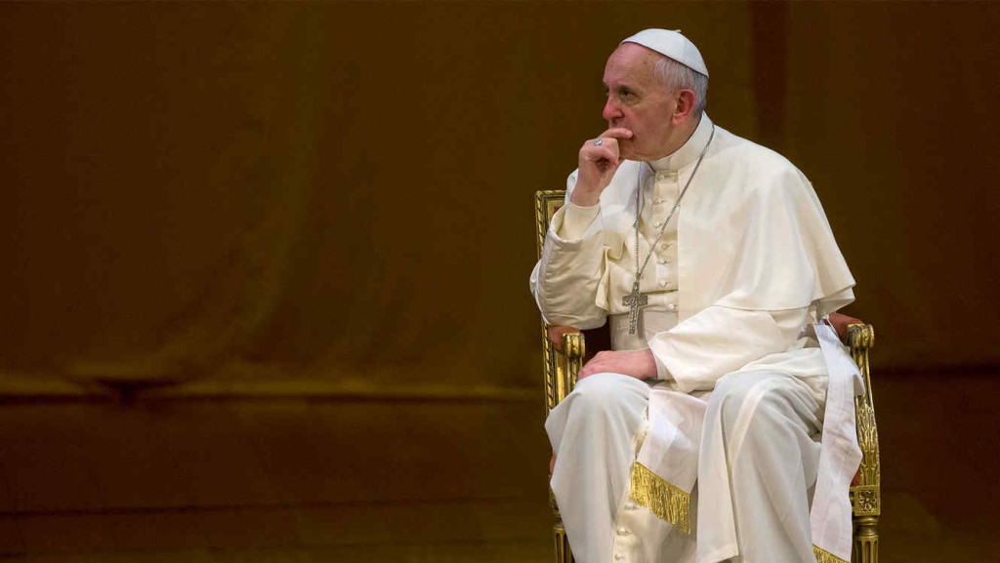
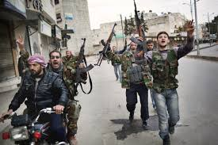

Visita do Papa esgota hotéis na Figueira da Foz
Texto da autoria de Maria Madalena
Em actualização A visita do Papa Francisco a Fátima, em maio de 2017, deverá transformar a típica época baixa em época alta, com os hotéis a registarem já muitas
pré-reservas.


Rússia e EUA voltam a discutir a Síria
Política Sábado, a cidade suíça de Lausanne vai receber um novo encontro internacional para debater a crise síria. Depois do fracasso do acordo negociado no início de Setembro pelos Estados Unidos
e Rússia, os dois países vão tentar relançar o tema e negociar algum tipo de trégua que possa abrir caminho a discussões sobre uma solução política.